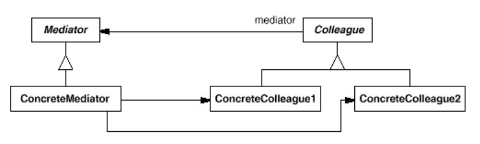

浅谈设计模式: 中介者模式(Mediator)
Table of Contents
实例
中介者模式(Mediator)
目的
定义一个对象来封装一组对象如何交互。中介者模式使各个对象不显示的互相引用，并让你独立的改变它们的交互，从而达到提高松耦合的效果。
实现
总结
中介者模式(Mediator)结构

组成
- 抽象中介者（Mediator）为与同事（Colleague）对象交流定义一个接口。
- 具体中介者（ConcreteMediator）
- 实现与同事（Colleague）对象协作的合作行为。
- 知道和维护它的同事类。
- 同事类（Colleague classes）
- 每个同事类知道它的中介者对象。
- 每个同事类任何它应该时与它的中介者交流，否则就与其他同事类交流。
应用场景
- 一组对象交流在很好定义的却复杂的方式上。导致的互相依赖性并没有好的组织而且难理解时。
- 复用一个对象是困难的，因为它引用并交流与许多其他对象。
- 分布在很多类中的一个行为需要被定制但不能进行太多子类化。
缺点
中介者模式集中式控制。中介者模式以减少交互的复杂度而增加中介者的复杂度。因为一个中介者类封装了协议，它会变得比任何同事类都复杂。这会导致中介者类自身是个难维护的庞然大物。